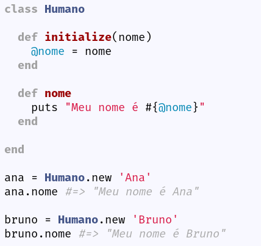
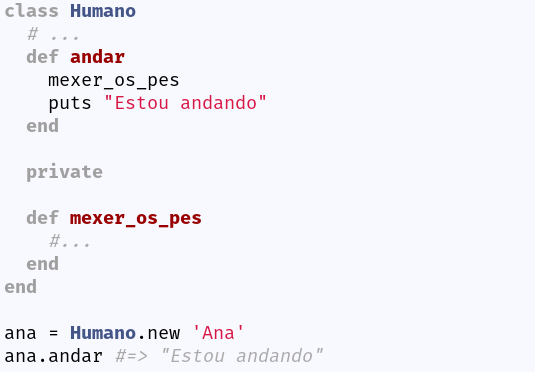

Ruby e orientação a objetos
Ruby Empowers

Ruby Empowers
Ruby Empowers

Normalmente criadas utilizando " ou '
Representam números inteiros, ou decimais como 150 ou 9.99
São coleções ordenadas com qualquer tipo de objetos, normalmente criadas com Array.new ou []
Símbolos representam nomes dentro do interpretador, criados com :, ex: :coelho
São dicionários, contendo chaves únicas e valores pode ser criado com Hash.new ou de forma implícita {}
Em ruby tudo é objeto! (menos blocos!!!)
Trecho de código fechadas nas keywords do/end ou entre {}. Um bloco pode possuír zero ou mais argumentos, definidos entre ||
Modelo de análise, projeto e programação de software baseado na composição e interação entre diversas unidades chamadas de 'objetos'. - Wikipedia
Em orientação a objetos, uma classe é uma descrição que abstrai um conjunto de objetos com características similares.
O encapsulamento faz com que a detalhes internos de um objeto estejam ocultos do mundo exterior.
Permite que classes compartilhem seus atributos e métodos entre si.
Conseguimos entender os principais conceitos de orientação a objetos e do estrutura do Ruby.
Documentação do Ruby (https://ruby-doc.org)
Agora estamos prontas para partir para a segunda etapa, iniciaremos o projeto de exemplo do Rails installer! 🎉